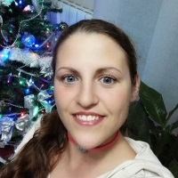

Agenda
| 15:00 - 15:30 | Recepção e Networking |
| 15:30 - 15:40 | Opening Remarks por

|
| 15:40 - 16:05 | Introducing Women Techmakers por  |
| 16:05 - 16:30 | Robótica por

|
| 16:30 - 16:55 | Apresentação por

|
| 16:55 - 17:30 | Coffee break & Networking |
| 17:30 - 17:40 | WTM #0 - First Oporto Meeting |
| 17:40 - 18:30 | Workgroups |
| 18:30 - 18:45 | Workgroups Presentation |
| 18:45 | Bye and Thanks

|
| 20:00 + | Networking dinner |
Speakers
Sofia Reis
Ecosystem Explorer at Mindera
Estela Bicho
Professora Associada do Departamento de Eletrónica Industrial e membro do Centro Algoritmi da Universidade do Minho
Laura Morillo-Velarde Rodríguez
Software Developer, Cabify
Emilia Catarina Simões
General Manager, Last2Ticket
To be announced
Role, Company
To be announced
Role, Company